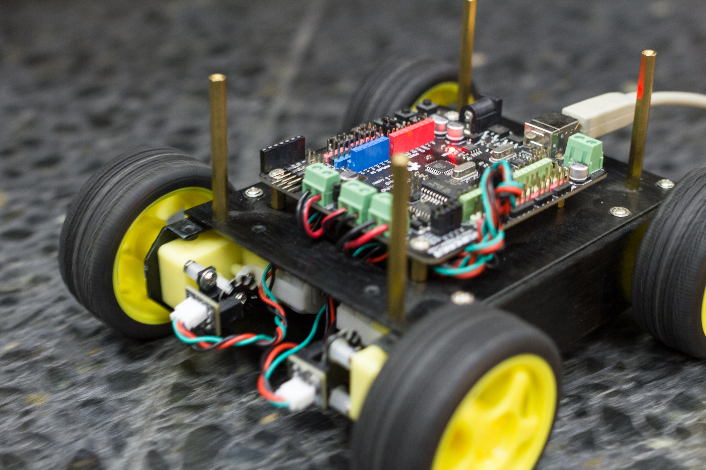
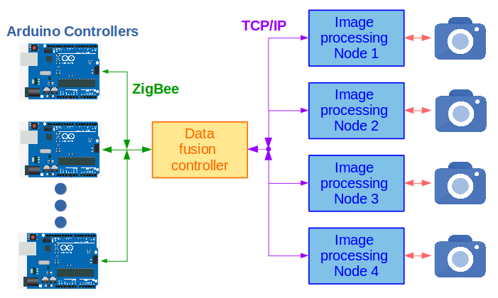

Introduction¶
UviSpace is an open-source project developed at the Electronic Technology Department in the University of Vigo. It consists in a system for remotely controlling Unmanned Ground Vehicles (UGVs) moving inside a delimited space.
{kind=link}
General overview¶
The project is aimed to control an indoor intelligent space where several unmanned vehicles are simultaneously observed and controlled through a distributed vision system, a central controller and an Arduino board embedded at each vehicle. The physical system was set up in the university in order to run tests and try new algorithms and solutions.
Hence, the whole system can be divided into three different elements:
The data fussion controller, which consists in a CPU that controls the whole system. The uvispace software project is executed there, whose main tasks are:
- communicate with the FPGA-based image processing nodes, using the TCP/IP protocol
- Merge the data obtained from the image processing nodes
- Get the global coordinates of the UGVs
- Given the destination of the UGVs, calculate the optimal path
- Calculate the UGVs speed, using a navigation model
- Communicate with the Arduino controllers, using the ZigBee protocol, and send them the speed set points.
The 4 image processing nodes. Their main component is an FPGA, with a camera peripheral. Each camera frame is processed in the FPGA, and the obtained results are sent to the data fussion controller through an Ethernet port.
The Arduino controllers, that control each UGV’s sensors and actuators. They receive orders from the data fussion controller through the data received from the serial port, connected to a XBee transceiver.
The main structure of the system can be observed in the diagram below.
Software project¶
The software subproject inside the UviSpace project is called uvispace as well. It is a Python2.7 project, and it is structured into 2 main packages, namely uvirobot and uvisensor.
The uvirobot package deals with the classes and functions needed to implement the algorithms for moving an UGV and communicating with it, while the uvisensor package is used to communicate with FPGA devices using a TCP/IP connection and receive scene information captured through camera peripherals.
uvirobot¶
The uvirobot package consist in 2 callable scripts:
- messenger.py stablishes the communication to the specified UGV, using the ZigBee protocol. Thus, prior runnning it an XBee module has to be connected to the PC, and another one to the Arduino board serial port, and both configured accordingly. Once the communication is stablished, the module listens to speed set points and send them to the UGV. When the execution is cancelled, a plot with the delay times is obtained and then the program ends.
- move_robot.py listens to input UGV position values and destination coordinates, calculates the UGV optimal path, and finally outputs the speed set points needed to achieve the planned path.
Moreover, there are 5 importable libraries inside the uvirobot package:
- path_tracker.py contains a class whose methods calculate an UGV’s path points, once given a position and destination, and then stores them in an attribute.
- plotter.py contains functions used to construct a graph with a predefined format. It is designed to map the calculated vs. real path of an UGV, and the delay times.
- robot.py contains the RobotController() class, where each instantiated object represents an UGV, and stablishes the upper interface for working with its speed values.
- serialcomm.py contains the SerMesProtocol() class, which is a child of the built-in python pyserial class. It defines a serial protocol, which will be used by the XBee modules for communicating the CPU with an UGV.
- speedtransform.py contains the Speed() class, for dealing with operations related to the speed values, such as transform between different scales or ensuring that the values are between valid boundaries.
Finally, the package contains an auxiliary module into the resources folder, called teleoperation.py. This is a callable module that allows to control the UGV with the keyboard, which is specially useful when the uvispace package has to be tested.
uvisensor¶
The uvisensor contains 1 callable module, multiplecamera.py. It is based on multithreading. The purpose of this module is to manage the information of N cameras, merge the vertices of every tracker and obtain the final number of UGVs(triangles) with their pose. There is a shared variable with all the vertices obtained from each camera.
The connection via TCP/IP to the cameras, as well as the processing of the images from each camera, is achieved in parallel.
Finally, another thread communicates with the user in order to get commands. At the moment, the only command is ‘Quit Program’ (‘Q’), but this functionality can be easily increased in the future.
Summing up, the list of threads is:
- 1 main thread that will merge the information from every camera (VideoSensor).
- N threads for getting data from the N cameras connected to the system.
- 1 user oriented thread for getting commands from the user.
The package has, as well, 4 importable modules:
- client.py contains the Client() class, which is a child of the Socket class from the socket.socket built-in Python module. This class contains methods for communicating specifically with the design FPGA hardware. Its methods allow to open and close the connection correctly, and to write and read from valid registers with the right format.
- geometry.py contains 2 classes. The Triangle() class is used for performing geometrical operations inherent to isosceles triangles, in order to get its base length, barycenter, position, angle... The Segment() class is used to determine a segment from its 2 points, and calculate afterwards the distance to another point.
- imgprocessing.py contains the Image() class, which has image-oriented methods, based on matrix operations, for getting useful information from image data.
- videosensor.py has the VideoSensor() class and several functions related to it. Each instantiated object represent an external FPGA device. Thus, this class has methods for setting up the TCP/IP connection, configuring the FPGA registers, and interact with it.